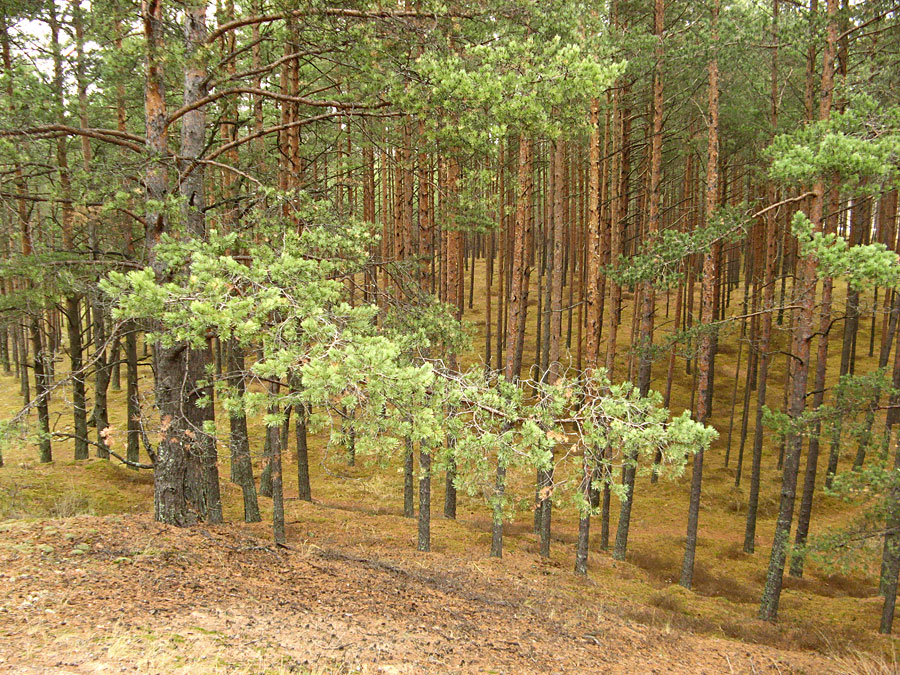

Mētrājs aug nedaudz auglīgākās podzolaugsnēs nekā sils. Galveno koku stāvu veido garas priedes. Zem tām aug egles un bērzi. Pamežs ir rets, tajā aug kadiķi, bērzi un eglītes. Zemsedzi veido brūklenāji, mellenāji, sūnas, virši un staipekņi.

Avots: www.ekoforest.lv